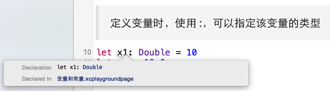

变量和常量
定义
let定义常量，一经赋值不允许再修改var定义变量，赋值之后仍然可以修改
//: # 常量
//: 定义常量并且直接设置数值
let x = 20
//: 常量数值一经设置，不能修改，以下代码会报错
// x = 30
//: 使用 `: 类型`，仅仅只定义类型，而没有设置数值
let x1: Int
//: 常量有一次设置数值的机会，以下代码没有问题，因为 x1 还没有被设置数值
x1 = 30
//: 一旦设置了数值之后，则不能再次修改，以下代码会报错，因为 x1 已经被设置了数值
// x1 = 50
//: # 变量
//: 变量设置数值之后，可以继续修改数值
var y = 200
y = 300
自动推导
- Swift能够根据右边的代码，推导出变量的准确类型
- 通常在开发时，不需要指定变量的类型
- 如果要指定变量，可以在变量名后使用:，然后跟上变量的类型
重要技巧：Option + Click 可以查看变量的类型

没有隐式转换！！！
- Swift 对数据类型要求异常严格
- 任何时候，都不会做隐式转换
如果要对不同类型的数据进行计算，必须要显式的转换
let x2 = 100
let y2 = 10.5
let num1 = Double(x2) + y2
let num2 = x2 + Int(y2)
let & var 的选择
- 应该尽量先选择常量，只有在必须修改时，才需要修改为
var - 在 Xcode 7.0 中，如果没有修改变量，Xcode 会提示修改为
let